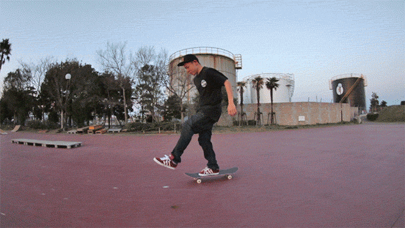

Now that you have your board and you know your stance, let's start riding! When riding you always want to remember these things:
Once you know your stance it's important to keep your front foot on the front four bolts of the skateboard. This is a good position to keep your foot in order to maintain balance. This will also prevent your feet from being too far apart and too close together. Once you're ready you can now start pushing. Take your back foot and push forward and off of the ground. Bend your knees, and get ready to put your back foot on the board. When your back foot goes on the board it should be perpendicular to your board. After putting your back foot on, pivot your front foot so that your feet are now pointing in the same direction. Similar to your front foot, your back foot should also be on the back four bolts of the board. Now, look ahead and enjoy the ride! Try this same process until you get comfortable pushing and riding your skateboard.

Now that you're moving, you're going to want to turn. Turning on the skateboard is quite natural. All you have to do is lean your body in the direction you want to turn. Put your weight on your toes to turn toeside, and put your weight on your heels if you want to turn heelside. Now that you can push, and turn let's learn how to stop. There are many ways to stop, but the safest way to stop is to drag your foot. In order to do this you'll want to take your back foot off the board and gradually place it flat on the ground. While doing this, the friction between your shoe and the ground will ease you into a stop. Practice this at slow speeds before applying it to quicker stops.
Finally, go skate! Spend as much time on your board as you can! Skate to the store, skate to school, skate everywhere! It's important to get comfortable on your board by riding as much as you can! This will give you a better feel for your board and get you used to riding on a variety of streets, sidewalks and pathways. As you ride pushing, turning and stopping will become second nature. Eventually the board should feel like an extension of your legs!
